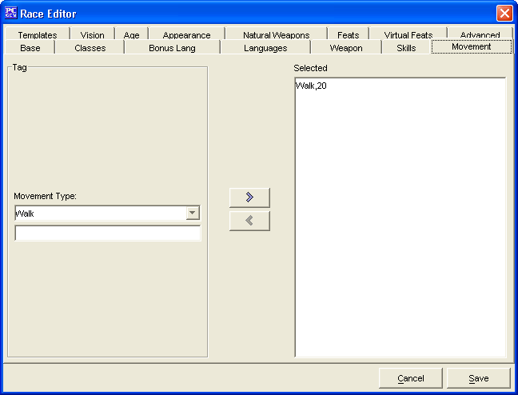

The Movement Tab is used to add the Type and Speed of the different movement types the race has.
The two windows, Tag and Selected are used to create a list of Movement Types.
The Cancel and Save buttons, which appear on every tab, are used to either cancel the Race creation or save it to the customRaces.lst file.